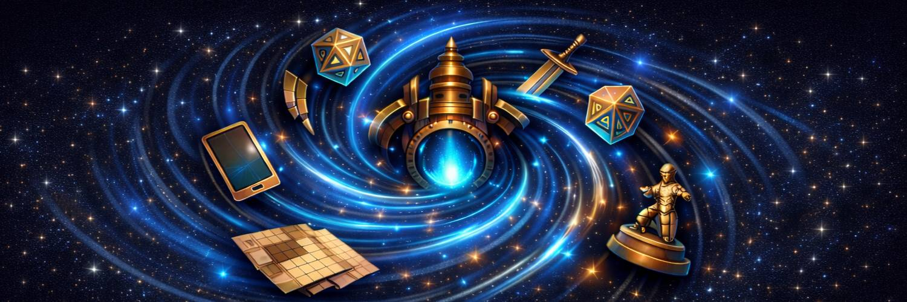

Jeu de rôle en ligne et hors-ligne
Rejoignez votre partie en un clic, ou forgez votre propre système de règles. NexusForge fonctionne même sans connexion.
Ni donjon solitaire, ni usine à formulaires : une table commune, où chaque conteur habille ses séances à ses couleurs.
